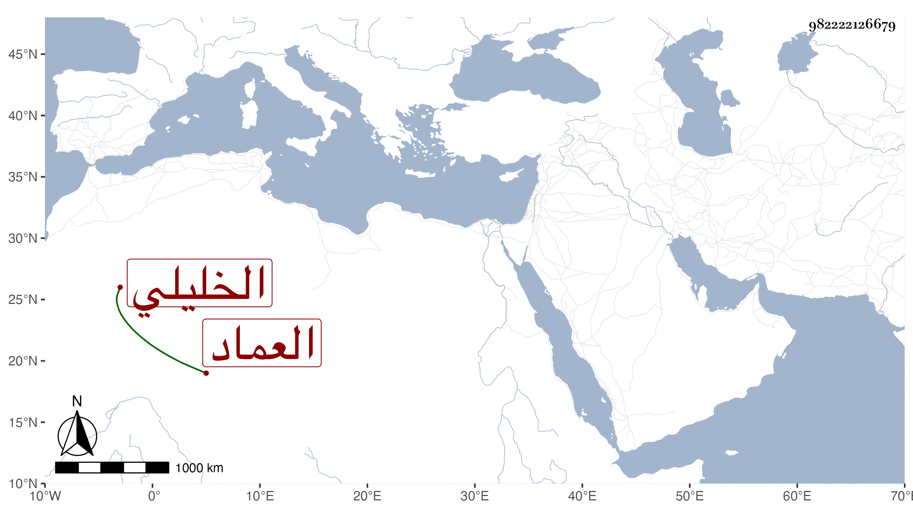

0902Sakhawi.DawLamic.ITO20230111-ara1.EIS1600.982222126679
Biography ID: 982222126679
900
إسماعيل بن إبراهيم بن مروان العماد الخليلي . ولد كما قرأته بخطه في سنة ثمان وأربعين وسبعمائة وأحضر في الثالثة والرابعة على الميدومي أشياء وأخذ القرن تجويدا وبالروايات عن الشهاب بن عياش وحدث سمع منه الفضلاء . وممن روى لنا عنه الأبي وخليل القيمري وكذا قرأ عليه القرآن لأبي عمر والزين عبد الرحمن ابن علي بن إسحاق الخليلي شقير ، وكان صالحا يؤدب الأبناء ببلده . مات في سادس المحرم سنة اثنتين وعشرين ، ذكره شيخنا في معجمه وقال أنه أجاز لابنه محمد ولم يحدد وقت وفاته ، وأما المقريزي فقال في عقوده ،إنه توفي سنة خمس وعشرين والأول أضبط ظنا .
